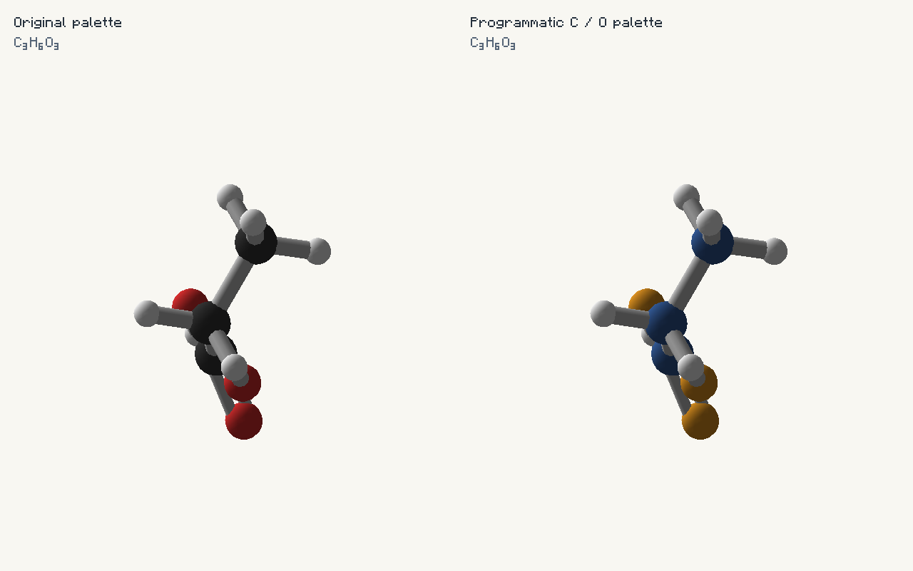

Change sphere and cube colors without replacing molecule definitions, changing geometry, or restarting Minecraft. Use a draw-local palette for one preview, an owned API layer for a mod, or JSON for player/resource-pack preferences.

| API | Scope |
|---|---|
| ElementColors | Common-side owner registration: replace, patch, remove, replaceJson, snapshot. Applied visually only in the local client process. |
| AvogadroClientApi.elementColors() | Read the effective client palette after resource packs, owners, and the local file. |
| AvogadroClientApi.reloadElementColors() | Palette-only asynchronous resource/file reload, scheduled on the client thread. |
| MoleculeRenderOptions.Builder.palette(map) | Existing draw-local override; captures a palette without modifying any global preferences. |
import io.github.wurtzitane.avogadro.api.ElementColors;
import java.util.Map;
// RGB values have six hex digits; do not supply alpha (0xFF...).
// Replacing an owner publishes the whole layer atomically.
ElementColors.replace("my_mod:atom_colors", 20,
Map.of("C", 0x365E9D, "O", 0xE99A24));
// A patch changes selected entries and retains that owner's priority.
ElementColors.patch("my_mod:atom_colors", Map.of("H", 0xE8EAF0));
// Empty replacement/removal reveals lower-priority colors.
ElementColors.remove("my_mod:atom_colors");Call these during common initialization or from a configuration callback. All methods are thread-safe and touch no graphics objects. A dedicated-server registration has no effect on connected clients: palettes are local visual preferences, not synchronized chemistry. To distribute colors, ship a resource pack or register the same layer on client installations. Layers survive world disconnect; explicitly remove your owner's layer when disabling its feature. Restarted processes must register again.
import io.github.wurtzitane.avogadro.api.ElementColors
// Put this in a client-installed post-init script.
// The same Java API is safe on the server, but is not sent to clients.
ElementColors.replace('my_pack:atom_colors', 20,
[C: 0x365E9D, O: 0xE99A24, H: 0xE8EAF0])
// From your own reload/configuration callback:
ElementColors.replaceJson('my_pack:atom_colors', 20,
'{"C":"#365E9D","O":"#E99A24"}')
// ElementColors.remove('my_pack:atom_colors')Replacing the same owner removes obsolete entries. Programmatic mutations take effect on the next ordinary draw; no F3+T or molecule reload is required. This API does not introduce a script watcher or change GroovyScript's supported reload stages. If a later script statement fails, it does not roll back an already-completed API call; validate a complete map and replace once.
{
"C": "#365E9D",
"O": "#E99A24",
"H": "#E8EAF0"
}The same partial object can be used in any of these places:
assets/avogadro/element-colors.json.config/avogadro/element-colors.json.ElementColors.replaceJson(owner, priority, json). The API does not choose or write a filesystem path for your mod.Precedence is shipped defaults, resource packs in Minecraft's order, programmatic owners, then local user overrides. Among API owners, higher integer priority wins; equal priorities resolve by lexicographically later owner ID. A draw-local palette(map) overrides its own captured colors last.
Resource and local files accept the 118 bundled symbols plus registered custom elements. API layers also accept syntactically valid future symbols, permitting registration before a custom element is created. A color entry never creates an element or changes periodic-table group membership. JSON requires #RRGGBB; the Java map uses 0xRRGGBB. Invalid, duplicate, oversized or alpha-bearing values fail explicitly. There are at most 64 API owners, 512 colors per owner, and 32 KiB of JSON per update.
// CLIENT ONLY: keep this import and call in your mod's client code.
import io.github.wurtzitane.avogadro.api.client.AvogadroClientApi;
AvogadroClientApi.reloadElementColors().whenComplete((palette, failure) -> {
if (failure != null) {
System.err.println("Element palette retained: " + failure.getMessage());
} else {
System.out.println("Palette revision: " + palette.revision());
}
});F3+T also reloads the palette. Invalid file reloads retain all previous valid file layers; the direct future reports the exception and the F3+T listener logs it. Neither operation removes API owners. The local file is created as an empty object when absent. Colors are opaque: transparent atoms are not enabled by this API.
import io.github.wurtzitane.avogadro.api.client.MoleculeRenderOptions;
var options = MoleculeRenderOptions.builder()
.palette(Map.of("C", 0x365E9D, "O", 0xE99A24))
.build();Build options once and reuse them. Options deliberately capture colors; rebuild them when a custom viewer should adopt a changed global palette. Ordinary tooltips, HEI previews, world HUD models, and newly started exports obtain effective colors automatically. Existing exports retain their initial snapshot for every frame. To inspect an opaque ARGB value, use AvogadroClientApi.elementColors().color("C"); the common registration snapshot exposes only programmatic RGB contributions.
Changed effective colors select new bounded GPU and pre-rendered-animation cache entries. Identical updates retain the palette identity and do not rebuild geometry. No resource-file I/O or palette-map construction occurs during unchanged frames. Sphere geometry, radii, bond styles, rotation, and matching remain unchanged. Neutral bonds, element labels, electron/nucleon colors, and UI theme colors are separate styling concerns.